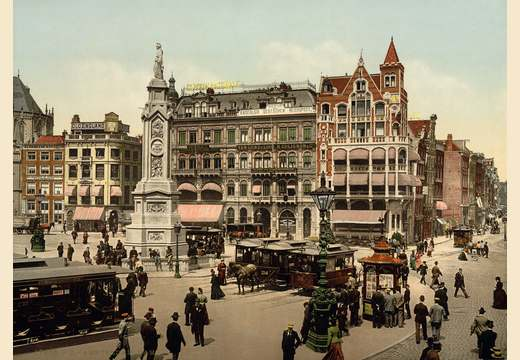
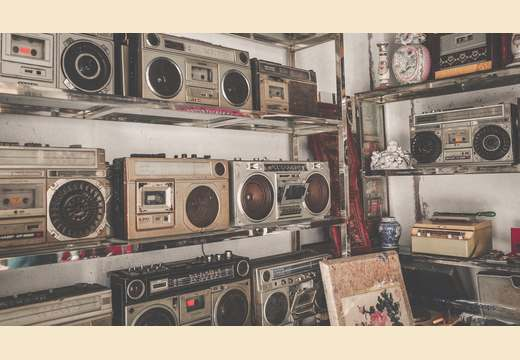

原始材料
多份街访逐字稿与妙记材料，包含真实人物、行业判断、财富路径、拒绝样本与短视频表达。
街访材料容易被看成“财富语录合集”。真正的处理重点，是把人物回答、提问顺序、追问动作、行业线索和传播结构拆成可复用的训练资产。
多份街访逐字稿与妙记材料，包含真实人物、行业判断、财富路径、拒绝样本与短视频表达。
区分事实、观点、案例、提问动作、表达钩子和风险边界，避免停留在表层摘要。
把 JAMES 的街访过程拆成开口、背书、追问、判断、收束、传播六类可训练能力。
按学习成长路径重排 21 天，而不是按视频发布顺序堆材料。
把课程落到个人提问脚本、案例库、商业判断清单和真实世界小实验。


核心不是模仿 JAMES，也不是复制被访者的财富路径，而是把真实对话里的信息密度，转成普通年轻人可练、可迁移、可复盘的能力。
从陌生人破冰、身份背书、问题漏斗到连续追问，训练在不确定场景中打开信息的能力。
从第一桶金、现金流、行业窗口、销售、杠杆和风险中，识别什么可学习、什么不可照抄。
拆解数字钩子、身份反差、故事转折、金句收束和人物包装，理解内容如何被看见。
21 天不是 21 个松散主题，而是一条从“看懂街访材料”到“形成自己的真实世界行动资产”的训练路径。
这套交付保留了“课程总体大纲、讲课PPT、配套讲稿、学习行动表”的完整链路。页面只展示个人作品集需要使用的成果入口。
明确课程定位、老板原始任务映射、材料加工方法、四库资产沉淀与 21 天板块结构。
围绕每一天的核心板块展开知识输出，覆盖真实人物案例、表达拆解、商业判断与方法迁移。
不是照念 PPT，而是提供自然连贯的课堂叙述、案例背景、方法解释、过渡话术和边界提醒。
把 21 天课程落到两条个人路线：大厂 AIPM 路线与加入 Aura 路线，每天都有输入、动作、输出和复盘记录。
这个项目的价值不是“整理了一批逐字稿”，而是展示了一种资料产品化能力：把松散素材变成可教学、可展示、可执行、可沉淀的知识产品。
能从噪声较高的逐字稿中抓出主题、人物、行业、行为动作和传播结构。
能把材料重排成 21 天递进体系，而不是简单照原顺序摘要。
能区分财富故事、商业机制、行业窗口、销售能力、现金流和不可复制条件。
能把学习内容转为个人路径下的具体训练动作、产出物和复盘指标。
好的资料加工，不是把内容变短，而是把它变得更可理解、更可迁移、更能进入真实行动。